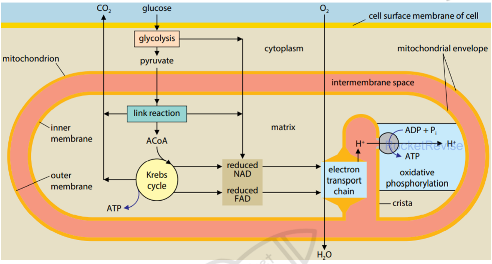
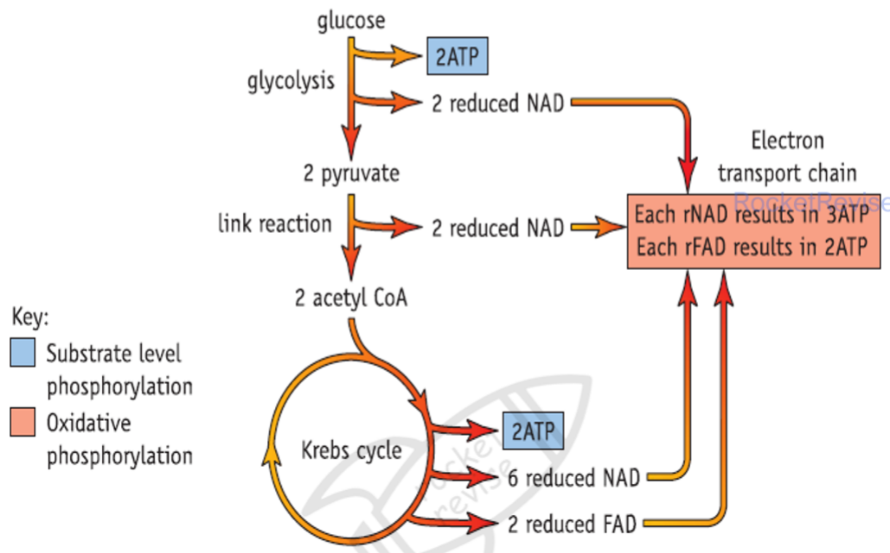
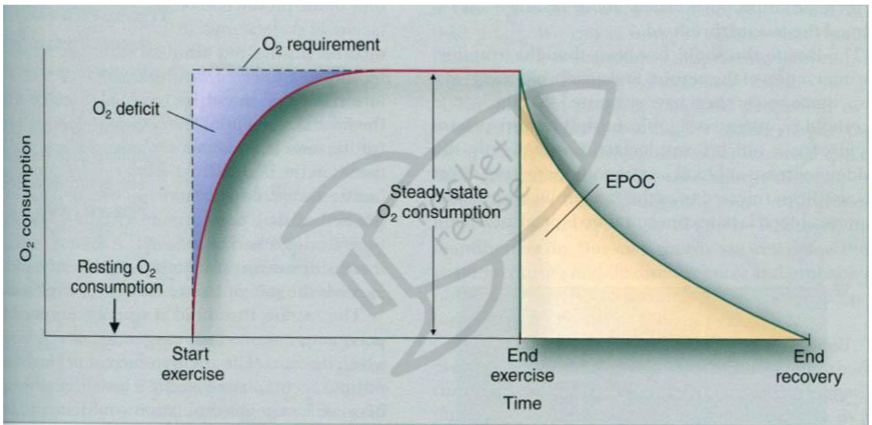

Cellular Respiration
Cellular respiration is how a cell releases the chemical energy stored in food and captures it as ATP. This page follows the route of glucose through glycolysis, the link reaction, the Krebs cycle and the electron transport chain, then looks at what changes when oxygen runs out.
The big picture
Respiration is not burning. Each step is a small, enzyme-controlled reaction, so energy is released in manageable packets and captured in ATP rather than lost as heat in one go. The respiratory substrate is the molecule that gets broken down, and glucose is the main one. In overall terms, glucose and oxygen give carbon dioxide, water and energy:
C6H12O6 + 6O2 → 6CO2 + 6H2O + energy (used to make ATP)
Aerobic respiration has two main phases. Glycolysis breaks glucose into a smaller molecule and does not need oxygen. The Krebs cycle needs oxygen, because oxygen is the final acceptor at the end of the electron transport chain. The link reaction connects the two, carrying the product of glycolysis into the mitochondrion.
- Respiratory substrate: the molecule that is broken down to release energy, usually glucose.
- Substrate-level phosphorylation: ATP formed when a phosphate group is passed directly from an intermediate to ADP.
- Reduced coenzyme: NAD or FAD that has accepted hydrogen (and electrons) during a dehydrogenation step.
- Oxidative phosphorylation: ATP made using the energy from electrons moving down the electron transport chain.
Stage 1: glycolysis (cytoplasm)
Glycolysis happens in the cytoplasm and does not need oxygen. It starts by adding phosphate groups to glucose, using ATP. This sounds wasteful, but it does two useful things. It makes glucose more reactive so that it can be split, and it stops glucose from leaving the cell because the charged phosphorylated molecule cannot cross the membrane.
The 6-carbon sugar then splits into two 3-carbon triose phosphate molecules (GALP). Each one is oxidised and converted into pyruvate. The oxidation removes hydrogen, which is accepted by NAD to form reduced NAD. Because two ATP were spent at the start and four were made in the later steps, the net gain is 2 ATP per glucose, plus 2 reduced NAD.
Per glucose, glycolysis gives a net 2 ATP (4 made, 2 used), 2 reduced NAD and 2 pyruvate. All of this happens without oxygen.
Stage 2: the link reaction (mitochondrial matrix)
Pyruvate is a 3-carbon molecule and must cross the mitochondrial membrane to reach the Krebs cycle. Inside, one carbon is removed as CO2 (decarboxylation), and hydrogen is removed to reduce NAD (dehydrogenation). The 2-carbon remainder is joined to coenzyme A to make acetyl CoA. Two enzymes are needed for these steps, a decarboxylase and a dehydrogenase. Each glucose gives two pyruvate, so the link reaction happens twice per glucose.
Stage 3: the Krebs cycle (mitochondrial matrix)
Acetyl CoA (2C) joins a 4-carbon compound to form a 6-carbon compound, citrate. The cycle then removes carbon as CO2 in two decarboxylation steps, which takes the molecule back down to a 4-carbon compound. That 4-carbon compound is regenerated at the end of the cycle, which is why the cycle can keep turning. Along the way, dehydrogenation steps reduce NAD and FAD, and one step makes ATP directly by substrate-level phosphorylation.
Because each glucose produces two acetyl CoA, the totals per glucose are 4 CO2, 2 ATP, 2 reduced FAD and 6 reduced NAD. Most of the energy from glucose is now held in these reduced coenzymes rather than in ATP.
Common mistake: writing that the Krebs cycle makes most of the ATP. It makes only 2 ATP per glucose directly. The bulk of ATP comes later, from the reduced coenzymes passing their electrons to the electron transport chain.
Stage 4: the electron transport chain and oxidative phosphorylation
The electron transport chain (ETC) is a row of electron carriers built into the inner mitochondrial membrane, folded into the cristae. Reduced NAD and reduced FAD release their hydrogen here. The hydrogen splits into electrons and H+ ions. Electrons pass from carrier to carrier, each carrier being reduced when it receives electrons and oxidised when it passes them on. The energy released as electrons move along the chain is used to pump H+ ions from the matrix into the intermembrane space.
This pumping builds up a high concentration of H+ in the intermembrane space, creating an electrochemical gradient. The H+ ions can only diffuse back into the matrix through ATP synthase, and the energy released as they flow through it drives the joining of ADP and inorganic phosphate to make ATP. This coupling of the H+ gradient to ATP synthesis is called chemiosmosis. At the end of the chain, the electrons are taken up by oxygen, which combines with H+ to form water. Oxygen is therefore the final electron acceptor, and without it the chain backs up and stops.
Reduced NAD becomes oxidised to NAD+ during this process. The regenerated NAD+ returns to glycolysis and the Krebs cycle, so those steps can continue. This regeneration is the reason the whole aerobic pathway depends on oxygen at its far end.

Chemiosmosis: H+ are pumped out of the matrix by the energy of electrons, then flow back through ATP synthase, and that flow is what makes ATP.
The model below runs the chain for you, so you can see what changes when oxygen runs out.
Counting the ATP from one glucose
Each reduced NAD is taken to yield about 3 ATP and each reduced FAD about 2 ATP through the ETC. Summing the stages gives the total shown in the standard flow diagram.

Glycolysis: 2 ATP (substrate level) and 2 reduced NAD. Each reduced NAD gives 3 ATP, so 2 × 3 = 6.
Link reaction: 2 reduced NAD (one per pyruvate), so 2 × 3 = 6 ATP.
Krebs cycle (two turns): 2 ATP (substrate level), 6 reduced NAD (6 × 3 = 18 ATP) and 2 reduced FAD (2 × 2 = 4 ATP).
Total: 2 + 6 + 6 + 2 + 18 + 4 = 38 ATP.
This is the theoretical figure from the rules above. In practice the yield is lower, because some ATP is spent moving molecules across membranes, so check what your mark scheme expects.
Anaerobic respiration and lactate
When oxygen is absent, the electron transport chain cannot pass its electrons on. Reduced NAD cannot unload its hydrogen, so NAD+ is no longer regenerated. The Krebs cycle needs NAD+ and FAD, so it stops. Aerobic respiration therefore stops, but glycolysis does not have to stop: it only needs NAD+ to keep going.
In animal muscle the problem is solved by the pyruvate itself. Pyruvate accepts hydrogen from reduced NAD and is converted into lactate. This regenerates NAD+, so glycolysis can keep producing its net 2 ATP per glucose. No extra ATP comes from the lactate step itself. Yeast and plants do something similar but make ethanol and CO2 instead.
Lactate that builds up must be dealt with later. It is carried in the blood to the liver, where much of it is converted back to pyruvate. That pyruvate is oxidised through the Krebs cycle using extra oxygen, and the rest is turned into glucose and then glycogen for storage in muscle.
Why muscles fatigue
During hard exercise, muscle cells rely heavily on glycolysis and lactate production. The lactic acid lowers the pH of the cell. The H+ ions attach to negatively charged groups in the active sites of enzymes, changing their shape. The substrate can then no longer bind, and the enzyme stops working. This slows the supply of energy and contributes to fatigue and cramp.
The extra oxygen taken in after exercise is called the oxygen debt, or excess post-exercise oxygen consumption (EPOC). It pays for converting lactate back to pyruvate and glucose, and for restoring the body's variables to resting levels.

Exam tip: when a question asks why lactate forms, say that NAD must be regenerated so that glycolysis can continue. Do not say lactate is made to produce energy.
Respiratory substrates and the athlete
The rate of ATP production depends on the substrate and on the size of the inner membrane. Fats store more energy per gram than carbohydrate because they contain a higher proportion of hydrogen. Fat is broken down by lipase into fatty acids and glycerol. Glycerol is phosphorylated and enters glycolysis as GALP. The large amount of hydrogen from fatty acids gives many reduced coenzymes and so a large proton gradient. Protein is used only when carbohydrate and fat are very low; its amino groups are removed (deamination) first.
An athlete's muscle cells often have mitochondria with more cristae. The larger inner membrane carries more electron transport chains and more ATP synthase, so more H+ can be pumped and more ATP made in the same time.
The respiratory quotient
The respiratory quotient (RQ) compares how much CO2 is released with how much O2 is used:
RQ = volume of CO2 produced ÷ volume of O2 used
An RQ near 1 means carbohydrate is being oxidised, because the O2 used and CO2 released match. Fats need much more oxygen for the same CO2, so their RQ is lower. Protein sits between the two. A value at or above 1 suggests CO2 is being released without the matching O2 use, which points to anaerobic respiration.
Equation for aerobic respiration of oleic acid: C18H34O2 + 25.5 O2 → 18 CO2 + 17 H2O + energy.
RQ = CO2 produced ÷ O2 used = 18 ÷ 25.5.
RQ = 0.7, which fits the value expected for a fat.
A fat needs far more oxygen per carbon than glucose, so less CO2 is released for each O2 used.
You can measure the RQ of germinating seeds with a simple respirometer, as in the model below.
Quick checks
In which part of the cell does the Krebs cycle take place?
The Krebs cycle runs in the matrix. The cytoplasm is where glycolysis happens, which is the commonest mix-up. The cristae hold the electron transport chain, not the cycle.
What is the net number of ATP produced by glycolysis per glucose molecule?
Glycolysis makes 4 ATP by substrate-level phosphorylation but uses 2 at the start to phosphorylate glucose, so the net gain is 2. Quoting 4 is the common error of forgetting the ATP spent.
Why does the electron transport chain stop when oxygen is absent?
Oxygen accepts electrons at the end of the chain and combines with H+ to form water. Without it, the carriers stay reduced and reduced NAD cannot be reoxidised, so the chain and chemiosmosis stop.
Why is lactate formed in muscle during anaerobic respiration?
Pyruvate accepts hydrogen from reduced NAD, which regenerates NAD+ for glycolysis. Lactate itself makes no extra ATP, so the first option is wrong.